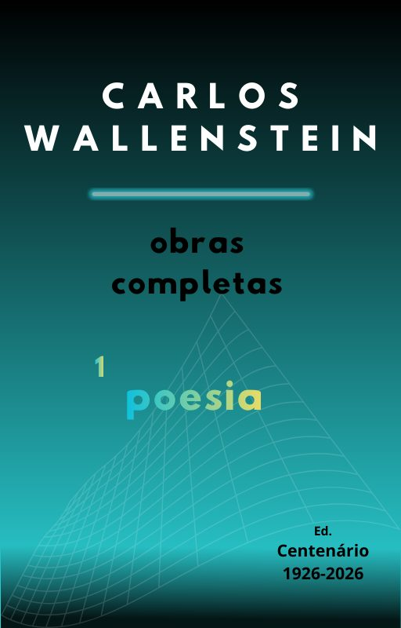

Volume 1
Poesia
Reúne Teoria da Tributação (1966), Corpo Conflito (1983) e outros poemas, entre eles os da secção «O Real Transgressor». Organização de Maria do Bom Sucesso Medeiros Franco; introdução de Pedro Tamen.